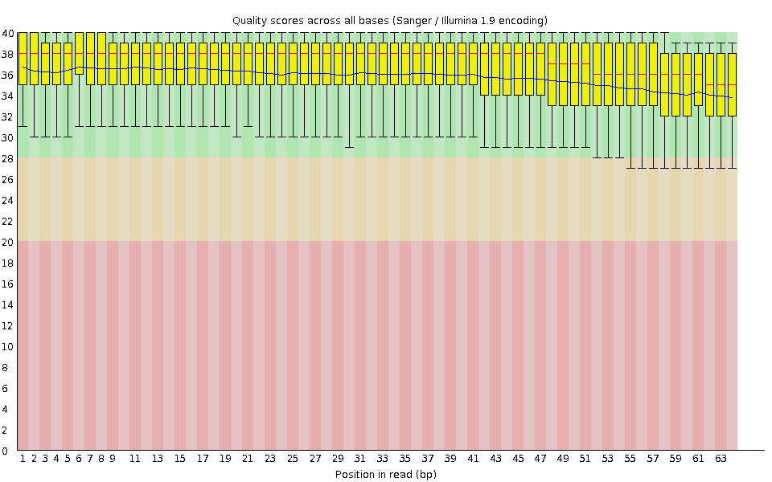
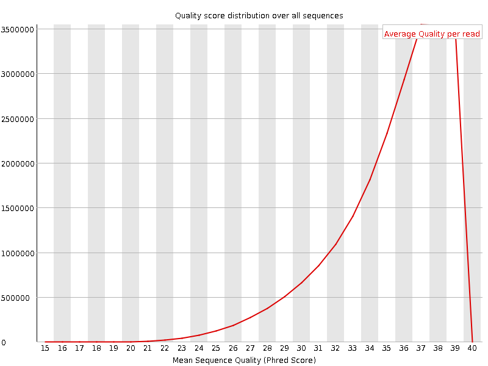
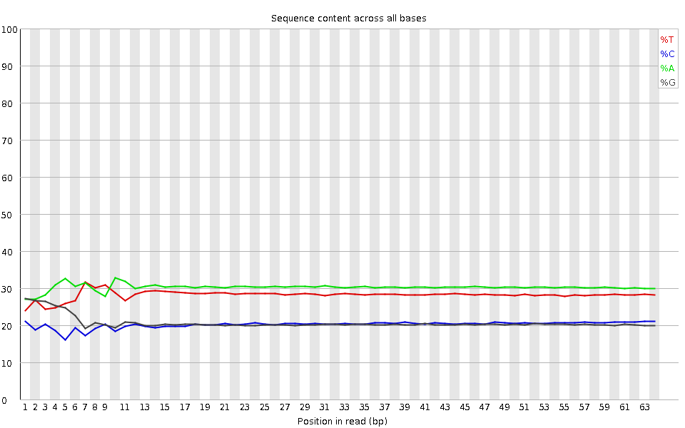
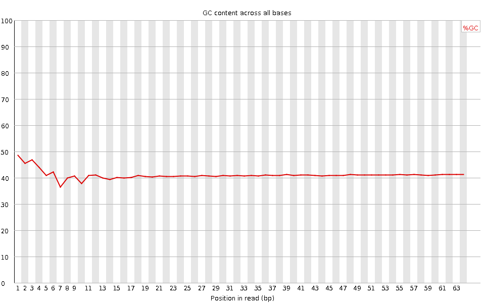
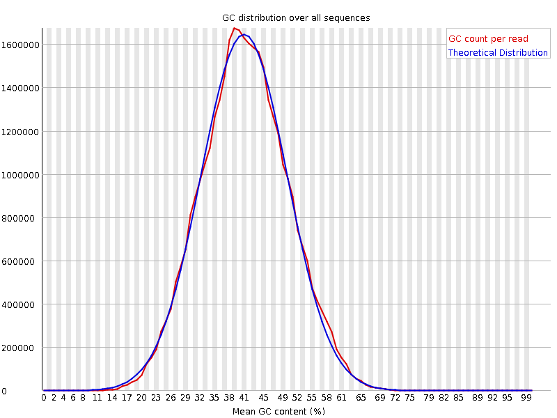
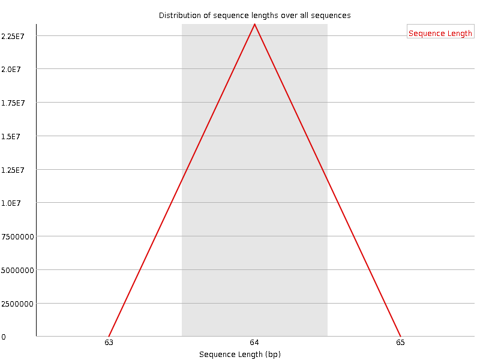
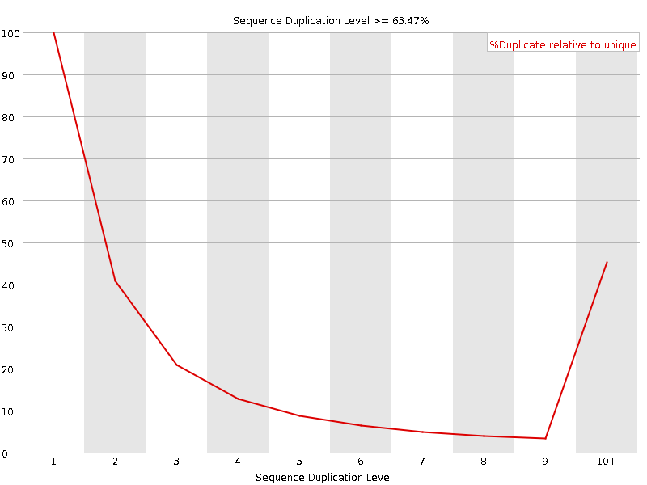
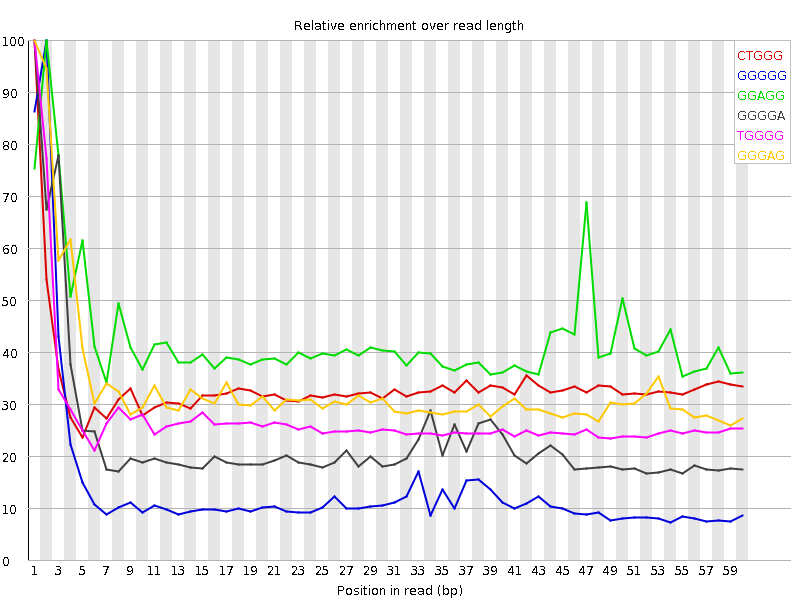

![[OK]](Icons/tick.png) Basic Statistics
Basic Statistics
| Measure | Value |
|---|---|
| Filename | SRR315330_pe_1.f.fastq |
| File type | Conventional base calls |
| Encoding | Sanger / Illumina 1.9 |
| Total Sequences | 23307859 |
| Filtered Sequences | 0 |
| Sequence length | 64 |
| %GC | 41 |
Per base sequence quality

Per sequence quality scores

![[WARN]](Icons/warning.png) Per base sequence content
Per base sequence content

Per base GC content

Per sequence GC content

Per base N content

Sequence Length Distribution

![[FAIL]](Icons/error.png) Sequence Duplication Levels
Sequence Duplication Levels

Overrepresented sequences
| Sequence | Count | Percentage | Possible Source |
|---|---|---|---|
| CGGGGGTCTTAGCTTTGGCTCTCCTTGCAAAGTTATTTCTAGTTAATTCATTATGCAGAAGGTA | 25288 | 0.10849559369652959 | No Hit |
Kmer Content

| Sequence | Count | Obs/Exp Overall | Obs/Exp Max | Max Obs/Exp Position |
|---|---|---|---|---|
| CTGGG | 1651875 | 2.2581294 | 6.7301993 | 1 |
| GGGGG | 1195975 | 2.180475 | 15.819532 | 2 |
| GGAGG | 1719345 | 2.1480932 | 5.0254545 | 2 |
| GGGGA | 1472945 | 1.8402493 | 7.955346 | 1 |
| TGGGG | 1373795 | 1.838437 | 6.6807847 | 1 |
| GGGAG | 1459110 | 1.8229643 | 5.474103 | 1 |
| GGGTG | 1285895 | 1.7208077 | 5.3097806 | 2 |
| GTGGG | 1283140 | 1.7171208 | 8.403071 | 1 |
| GGGGT | 1274455 | 1.7054986 | 9.224471 | 3 |
| GGGGC | 757325 | 1.4104449 | 5.3877482 | 2 |
| GGGTC | 881605 | 1.2051626 | 5.652859 | 4 |
| CGGGG | 562345 | 1.0473133 | 11.986802 | 1 |